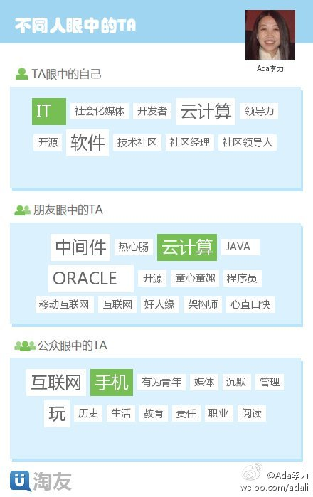
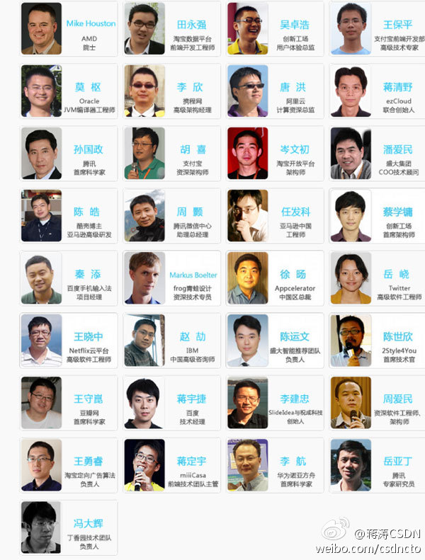

改变自己是个人最能掌握和把控的，就是方向要对，改变是为了扩大外延。@shukebeta:人们只能通过改变自己，以间接的方式改变别人。 直接让江流改变是不现实的，徒增烦恼。然而当每个人都不随波逐流的时候，就能改变江流。 所以，积极上进，从我做起，从小事做起，一心向真向善，我们的社会自然就会越来越好。
依靠微博内容，关注和粉丝，挖掘人特点和人脉的产品出来了。“我眼中的自己”是自己定义的标签，刚刚有改动，反映到朋友眼中的自己，以及公众眼中的自己，有延迟。当个参考还不错。另一个有意思的是人脉分布。@淘友网 网页链接 
回复@yuwang881: 为感谢你这资深专业人士的支持，现赠票一张，邀请你参加今年的SD大会。私信给我邮箱地址。[呵呵] //@yuwang881:我参加过一次。内容非常充实，一天下来，感觉即累又兴奋！ //@Ada李力:这将是我参加的第三次SD大会。@蒋涛CSDN:SD开发者大会即将召开-腾讯淘宝百度讲师团登场 SDCC大会第二批议题发布(图) - 第二批来自于Adobe、Firefox、360、携程网、金山、阿里云、盛大等公司的技术专家名单和议题公布出来。 网页链接 
回复@英特尔开放云计算: 到时候多用行动表示支持哈。谢谢先。 //@英特尔开放云计算:回复@Ada李力: 无论是Hype还是Action而产生的影响，核心都在人；人集聚的核心，是社区。CSDN以此为基础推进云计算和大数据的发展，必然是影响迅速而直接。期待年底的大数据大会~---:抱歉，由于作者设置，你暂时没有这条微博的查看权限哦。查看帮助： 网页链接